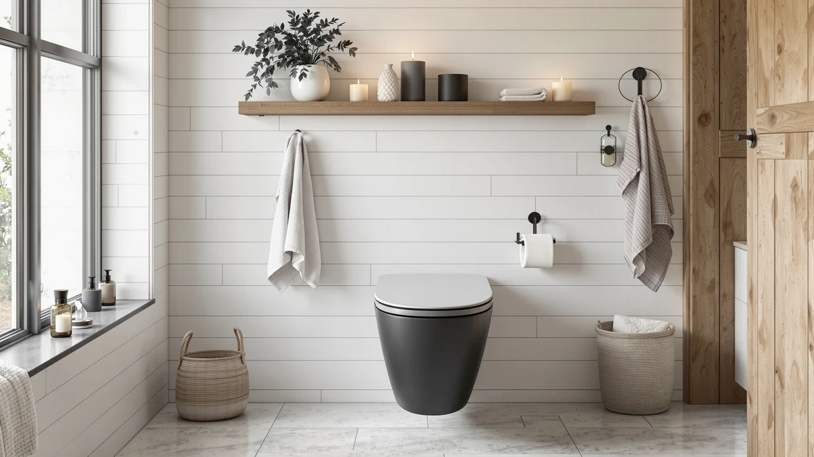

Quick Answer
The MEJE #T010G wall hung smart toilet packs a built-in bidet, heated seat and foot-sensor controls into an in-wall unit that frees up floor space, for $811.30. It earns that price if you want smart features and a compact footprint; buyers who want a reliable flush and nothing more can save $117 to $138 with the floor-mounted alternatives below.
Our pick: MEJE #T010G - Wall Hung, $811.30 Check Price on Amazon
Bottom line: our top pick is the MEJE #T010G - Wall Hung Smart Toilet at $811.30.
Things to Know Before You Buy
- The T010G is a wall-hung toilet, meaning the water tank sits inside the wall rather than on the floor behind the bowl, which is why MEJE builds it into the unit instead of requiring a separate in-wall carrier tank.
- At $811.30, it costs more than every alternative in this comparison: $117.40 more than the TOTO Aquia IV ($693.90), $130.75 more than the Kohler Santa Rosa ($680.55) and $138.42 more than the TOTO UltraMax ($672.88).
- Its bidet, heated seat, warm-water dryer, auto flush and foot-sensor lid controls are all built in, so you're not adding a separate bidet seat the way you would with a WASHLET+-ready toilet like the Aquia IV.
- Amazon's listing doesn't show a public star rating or review count for this ASIN, so we can't cite one here, and a missing rating isn't the same as a zero rating.
- If floor space and smart features matter more than price, the T010G is the pick in this review; if you want a strong flush at a lower cost, the Kohler and TOTO alternatives below are worth comparing first.
This MEJE #T010G wall hung smart toilet review exists because wall-hung, bidet-equipped toilets keep showing up in small-bathroom searches without much independent coverage to explain what you're actually paying for. At $811.30, the T010G costs more than any one-piece or two-piece toilet we track in this price range, so what matters here is whether the space savings and smart features earn that premium. We went through MEJE's published feature list, the current Amazon price and the broader market for wall-hung and bidet toilets in the same range to answer it. This review is based entirely on what MEJE publishes about the toilet, current pricing and how it stacks up against three floor-mounted alternatives.
The short version: the T010G makes sense if you specifically want a wall-hung toilet with a built-in bidet, heated seat and foot-sensor controls, and you're willing to pay a premium for that combination of space savings and smart features. If a strong, simple flush at a lower price matters more than smart features, the TOTO Aquia IV, Kohler Santa Rosa and TOTO UltraMax below cost $117 to $138 less and skip the complexity of an in-wall tank.
Why You Should Trust Us
Ilane Tall researches bathroom fixtures for Best One Piece Toilets, tracking manufacturer spec sheets, Amazon price movement and patterns across verified owner reviews for toilets like the MEJE T010G. This MEJE #T010G wall hung smart toilet review is built entirely from public manufacturer data and current Amazon pricing rather than personal use of the fixture.
We do not run a testing lab. This research compares manufacturer data, pricing and owner feedback rather than personal use of the toilet. When MEJE doesn't publish a figure, such as rough-in distance, or Amazon doesn't show a rating for this ASIN, we say so instead of filling in a number we don't have.
Our Research Experience
To put together this MEJE #T010G wall hung smart toilet review, we started with MEJE's published feature list for the T010G, then checked the current Amazon price and cross-referenced it against three floor-mounted toilets in a similar price band: the TOTO Aquia IV WASHLET+, the Kohler Santa Rosa and the TOTO UltraMax. We looked for patterns in verified owner reviews on each listing, focusing on recurring comments about installation requirements, smart-feature reliability and flush performance rather than one-off complaints.
We excluded wall-hung and smart toilets without a public spec sheet or without enough verified reviews to establish a pattern. Where MEJE doesn't publish a dimension, such as rough-in or carrier-system requirements, or Amazon doesn't show a review count for this ASIN, we note that the figure is unavailable rather than guessing at it.
Overview & Specs

MEJE #T010G - Wall Hung
What we like
- Built-in bidet, heated seat, warm-water dryer and auto flush, all included instead of a separate add-on
- Foot-sensor lid and flush controls for hands-free operation
- Water tank built into the unit, so it doesn't need a separate in-wall carrier tank
Flaws but not dealbreakers
- At $811.30, it costs $117 to $138 more than every alternative in this comparison
- MEJE's listing doesn't publish a rough-in distance or carrier-system spec, so confirm your wall setup can accommodate it before buying
- No public star rating or review count on Amazon for this ASIN, so we can't point to a review-based track record
| Material | — |
| Size | — |
The MEJE #T010G is a wall-hung smart toilet that mounts to the wall with its water tank built into the unit, rather than requiring a separate in-wall carrier tank the way most wall-hung toilets do. According to MEJE's feature list, the lid opens automatically as you approach, a stream of water pre-wets the bowl when you sit, and the unit flushes automatically a few seconds after you stand up. A remote control and a smaller secondary control are both included for manual operation when you don't want the automatic functions running.
The bidet side adds heated seating, instant warm water, a warm-air dryer and a night light, functions you'd otherwise pay extra for as a separate bidet seat on a toilet like the TOTO Aquia IV below. Foot-sensor controls let you open or close the lid and seat, and trigger a flush, without touching anything. MEJE doesn't publish a rough-in distance or the exact carrier-system requirements for mounting, so measure your wall setup and existing plumbing before ordering rather than assuming a universal fit. Amazon doesn't show a public star rating or review count for this ASIN either, so we can't cite one here.
What We Liked
The biggest strength of this MEJE wall hung smart toilet is how much it packs into one unit. The bidet, heated seat, warm-water dryer and auto flush are all built in, so you skip the extra cost and installation of a separate bidet seat, the kind of add-on you'd need to match these functions on a WASHLET+-ready toilet like the TOTO Aquia IV.
We also like that MEJE built the water tank into the T010G itself. Most wall-hung toilets need a separate in-wall carrier tank installed behind the drywall, which adds cost and complexity to a bathroom remodel. By integrating the tank into the unit, MEJE cuts out that extra component.
The foot-sensor controls are a practical touch too. Being able to open the lid, flush and close everything up with your foot keeps hands off a surface that's otherwise constantly touched, a detail that matters more in a wall-hung, smart-toilet context than it would on a plain one-piece model.
What Could Be Better
Price is the clearest drawback of this MEJE #T010G wall hung smart toilet review: at $811.30, it costs $117.40 more than the TOTO Aquia IV, $130.75 more than the Kohler Santa Rosa and $138.42 more than the TOTO UltraMax, and none of those alternatives give up much in day-to-day flush performance.
MEJE's own listing doesn't publish a rough-in distance or the exact carrier-system requirements for mounting, which makes it harder to confirm fit before buying compared with a floor-mounted toilet you can measure against your existing plumbing. Amazon also doesn't show a public star rating or review count for this ASIN, so we can't point to a review-based track record the way we might for a longer-established model.
If you want a reliable flush without the complexity of smart features or wall-mounted installation, this isn't that toilet. The Kohler Santa Rosa and TOTO UltraMax below cover that ground at a lower price, and a simpler installation.
Who Is It For?
This MEJE #T010G wall hung smart toilet is the right pick for homeowners remodeling a small bathroom who want the floor space a wall-hung design frees up, combined with bidet functions, a heated seat and foot-sensor controls built into one unit instead of bought separately. It also suits anyone upgrading toward a smart-toilet setup who'd rather not add a standalone bidet seat to an existing floor-mounted toilet.
It's a weaker fit if your main goal is to spend less or keep installation simple: the TOTO Aquia IV, Kohler Santa Rosa and TOTO UltraMax all undercut it by over $100 and mount to the floor the way a standard bathroom is already plumbed for. It's also not the choice for anyone who can't confirm their wall can accommodate the built-in tank, since MEJE doesn't publish that spec.
Alternatives to Consider
If the T010G doesn't fit your budget or your installation setup, these three alternatives came up most often in our research into one-piece and two-piece toilets in the same price range.

Also Great
TOTO Aquia IV WASHLET+ Two-Piece
A two-piece WASHLET+-ready toilet with a dual-flush Tornado Flush system and CEFIONTECT glaze that resists waste buildup, priced $117.40 below the MEJE T010G.
$693.90
Check Price on Amazon
Also Great
Kohler 30811-96 Santa Rosa One-Piece
A one-piece compact elongated toilet with Comfort Height chair-level seating, at $680.55 the cheapest floor-mounted alternative in this comparison.
$680.55
Check Price on Amazon
Best Value
TOTO® UltraMax® One-Piece Elongated 1.6
A one-piece elongated toilet with a Power Gravity 1.6 GPF flushing system and an included SoftClose seat, at $672.88 the lowest price in this comparison.
$672.88
Check Price on AmazonFrequently Asked Questions
Is the MEJE #T010G wall hung smart toilet worth $811.30?
It's worth the price if you specifically want bidet functions, a heated seat and foot-sensor controls in a wall-hung footprint. Buyers who don't need smart features can save $117 to $138 with the TOTO Aquia IV, Kohler Santa Rosa or TOTO UltraMax below without losing core flush performance.
Does a wall-hung toilet like the MEJE T010G need a different installation than a standard toilet?
Yes. A wall-hung toilet mounts to an in-wall tank and carrier system rather than sitting on the floor with an exposed tank, which is why MEJE builds the water tank into the unit itself. That in-wall design is what frees up the floor space a standard one-piece or two-piece toilet like the TOTO Aquia IV or Kohler Santa Rosa can't match.
How does the MEJE T010G compare to the TOTO Aquia IV WASHLET+?
The MEJE T010G builds its bidet, heated seat and dryer functions directly into a wall-hung unit, while the TOTO Aquia IV is a floor-mounted two-piece toilet that's WASHLET+-ready, meaning you'd add a separate bidet seat to get similar functions. The Aquia IV costs $117.40 less and uses TOTO's Tornado Flush and CEFIONTECT glaze for cleaning, but it doesn't save floor space the way the T010G does.
Final Verdict
This MEJE #T010G wall hung smart toilet review comes down to a straightforward trade-off. MEJE's wall-hung smart toilet delivers a built-in bidet, heated seat and foot-sensor controls in a space-saving footprint at $811.30, the highest price among the four models we compared, without a public star rating or review count to confirm a long track record. If a wall-hung design with smart features matters to you, the MEJE is worth the premium. Buyers who'd rather save $117 to $138 should look at the TOTO Aquia IV, Kohler Santa Rosa or TOTO UltraMax above instead.